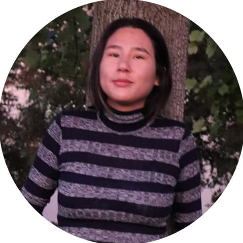
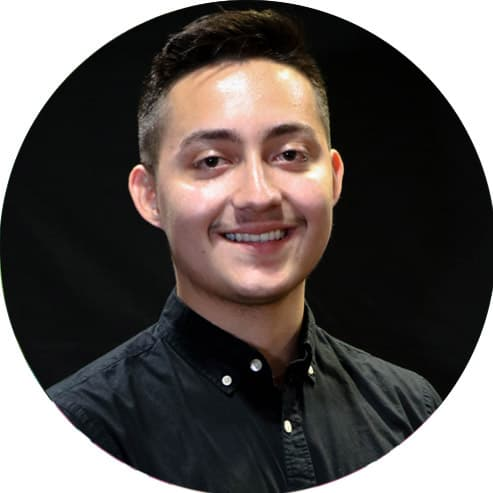

Meet Our Panelists & Moderator
Chris Gallo
My name is Chris Gallo, I’m a senior at CSU Stanislaus majoring in Computer Science. I’m currently working as a Youth Development Professional at the Boys and Girls Club in Modesto and will be working as a Software Engineer at Northrop Grumman starting August 2021. My main focus recently has been on web development

Vanessa Hernandez
I’m currently working part-time as an IT Viticulture Researcher at E & J Gallo. I plan to obtain a BS in Computer Science and a minor in chemistry. I have been in three research groups at Stan State: 1. Data Mining, 2. Artificial Intelligence and lastly Physical Chemistry. I’m also the vice president of the SAC - NAS and I’m an upcoming Vice President for the Computing Alliance of Hispanic-Serving Institution’s club. I have been able to go to computer science conferences which gave me more knowledge on the type of career path I want.

Stephanie Gamboa
Currently, I am working for the University as a Web Assistant and will be graduating with a BS in Computer Science in December 2020. Since July 2019, I have served as a CAHSI Student Advocate. I am an NSF S-STEM Scholar and a member of the Honor Society of Phi Kappa Phi. My passion for helping others led me to establish the first CAHSI club at Stan State in 2019. Additionally, I hosted the first ever Ask a CS Senior event, now known as the Students in Tech event, to help encourage surrounding high school students to pursue CS, as well as to help motivate and combat imposter syndrome for current freshman and sophomores.
Emma Van Hoogmoed
Hello, I am the Computer Science Club president and a Ronald E. McNair Scholar. My current research is teaching robots biologically inspired tasks. My future goal is to attend grad school to study Networking and Cyber Security.

Moises Ortega
Hello, my name is Moises Ortega and I am a senior studying Computer Science. Currently, I am a research assistant working under Dr. Dae Hee Kim researching ways to leverage machine learning and drones to detect abnormalities in crops. Last summer I was fortunate enough to intern at E. & J. Gallo Winery as a Programmer Analyst on their Nourish team and I was tasked with helpingin the development of an internal tool to helpfarmers find issues within their crops using Satellite imagery. My current goal is to obtain my degree in Computer Science and work as a Software Engineer.

Marina Cowern
CAHSI Club Event Coordinator